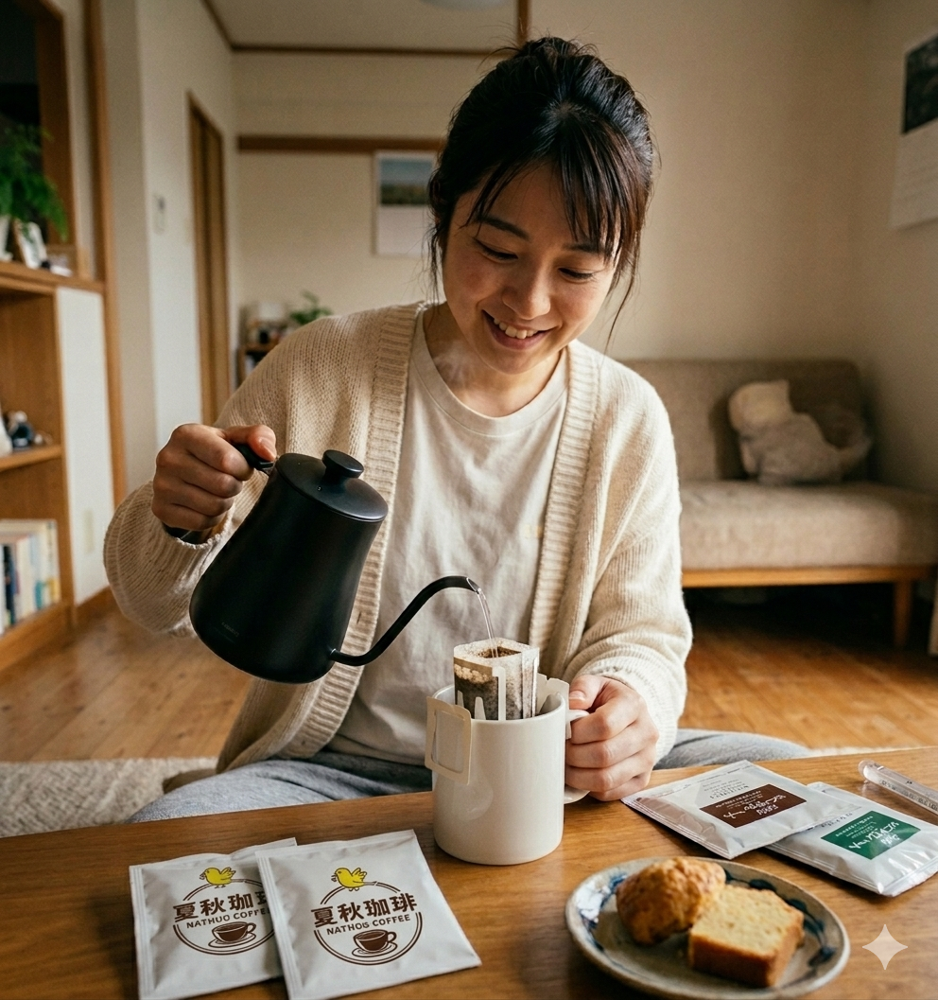

Handcrafted Slow Coffee
小さなミルクパンから
小さなミルクパンから
生まれる、
癒しの一杯。
丁寧に生豆を洗い、小さなミルクパンでじっくりと焙煎。苦さより甘さとフルーティーな香りを大切にした、心ほどける珈琲をお届けします。
豆を見る arrow_downward
Concept
The Story Behind the Cup
苦さより、甘さと香りを。
「コーヒーは苦いもの」と思っていた店主が、浅煎り・中煎りの持つやさしい甘さや、フルーティーな香りとの出会いで、珈琲の世界が一変しました。その感動をそのままお届けしたくて、夏秋珈琲が生まれました。
焙煎前に生豆を丁寧に水洗いすることで、雑味が消え、豆本来のクリーンでピュアな風味だけが残ります。
ミルクパンでの手焙煎
大きな焙煎機ではなく、小さなフタ付きのミルクパンを使用。火との距離を感じながら、豆の音と香りの変化に耳を傾け、少しずつ、丁寧に火を入れていきます。
浅煎り〜中煎りに仕上げることで、苦みを抑えた甘やかで飲みやすい味わいを引き出します。
Beans
Our Selections
Contact & Order
Get in Touch
ご注文・ご質問は、Instagramのダイレクトメッセージにてお気軽にどうぞ。
焙煎の様子や日々の珈琲の風景も発信しています。